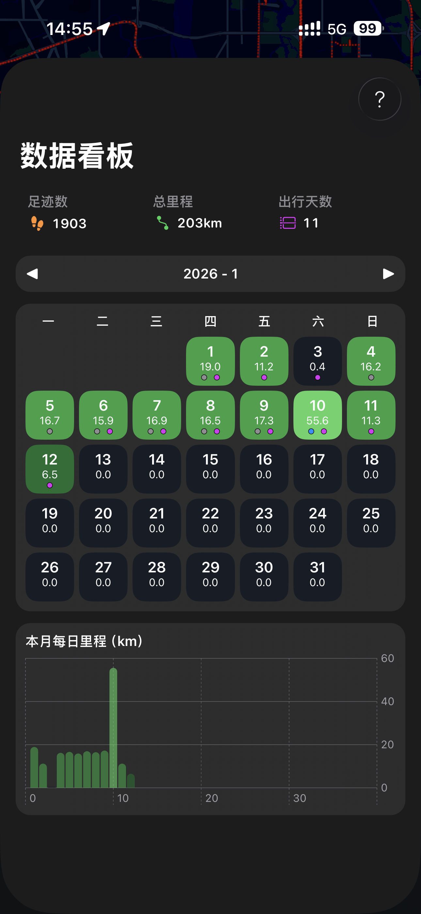
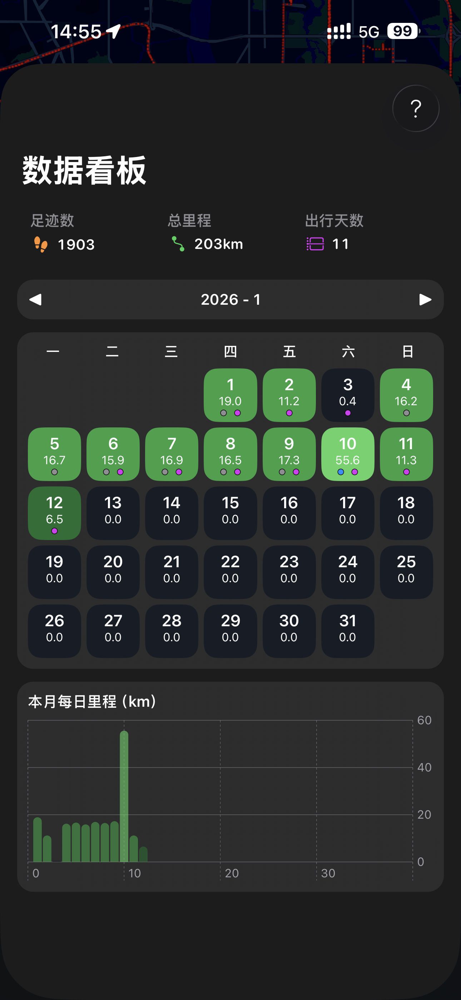
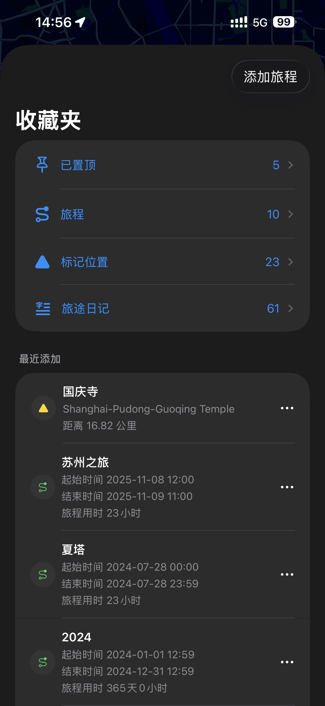
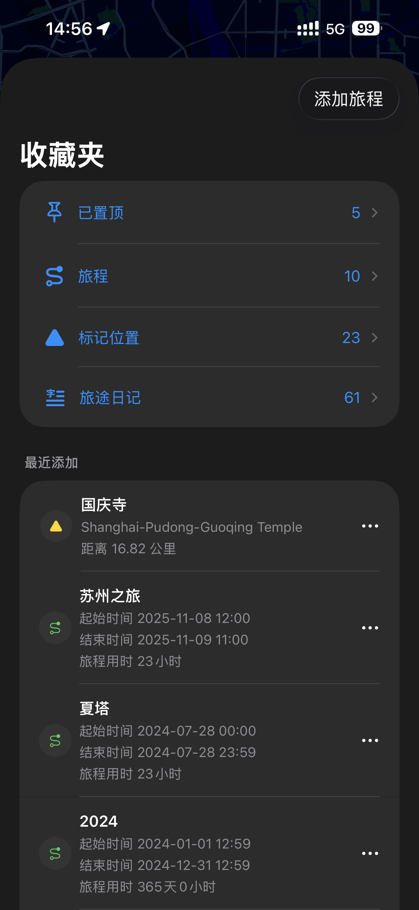
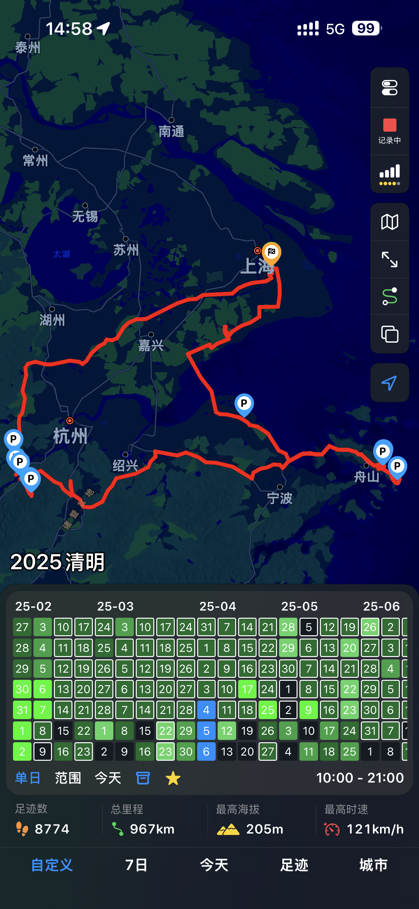
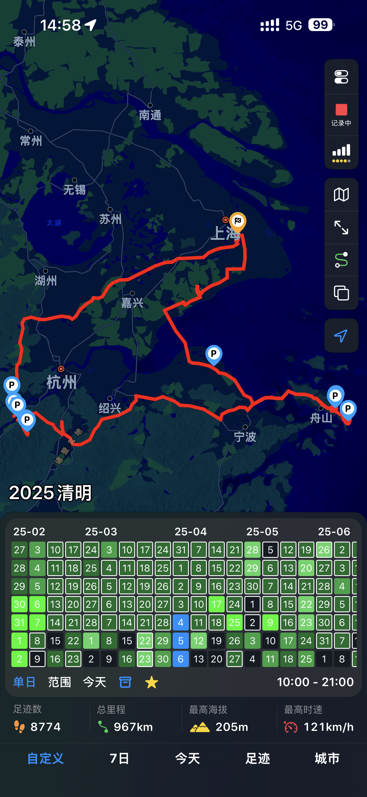
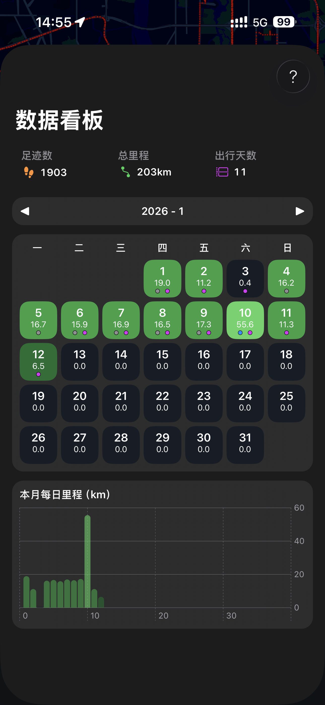
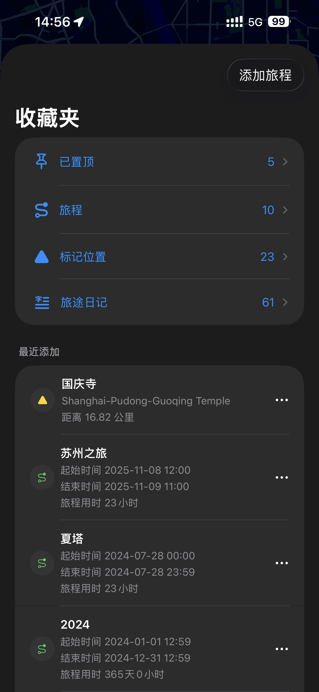
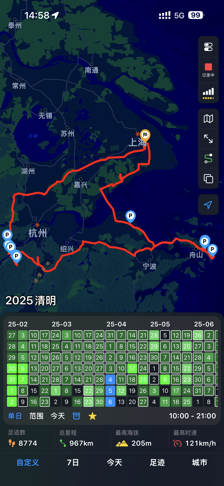

 



 


GoLog 是一款专注于「真实出行轨迹」的个人足迹记录应用。
它不是打卡工具，也不是社交地图，而是帮你安静、准确地记录自己走过的世界。
我们相信，位置不只是坐标，轨迹也不该只是线条。
在 GoLog 里，每一次移动、每一段路径、每一天的行走，都会被认真对待。



GoLog 会根据你的实际定位数据，逐步呈现你到达过的区域与路线。
无论是步行、驾车，还是其他出行方式，地图都会以统一而克制的方式，保留你真实的移动痕迹。
放大地图，你能看到具体路线；
缩小视角，你会发现自己的活动范围在不断延伸。
GoLog 不只关注"去了哪里"，也帮助你回顾一段时间内的出行频率与活动分布。
通过按天、按月的统计视图，你可以直观地看到自己的移动节奏，而不是只剩下一条条孤立的轨迹。
通过轨迹回放，你可以重新"走一遍"曾经的旅程。
路线、速度、转折，都按真实数据还原，
不是动画，而是时间本身在地图上前进。
GoLog 提供按日期管理足迹数据的能力，你可以补全、归档或隐藏某些记录，让地图呈现你当下希望保留的状态。
可以分析城市停留点，查看你在一个城市停留了多久，以及停留的地点。
GoLog 不设服务器，也不会收集或存储你的出行数据。
所有足迹数据仅保存在你的设备本地。
如果你开启了 iCloud，同步与备份将通过 Apple 提供的 iCloud 文件系统完成，
数据仅存放在 GoLog 的应用专属文件夹中，用于跨设备同步与恢复。
GoLog 只会访问这一专属空间，
不会读取、上传或触碰你 iCloud 中的其他任何内容。
你的数据，始终属于你，也只存在于你可控的范围内。
GoLog
不是为了记录世界有多大，
而是在时间里，留下清晰、可回看的移动痕迹。